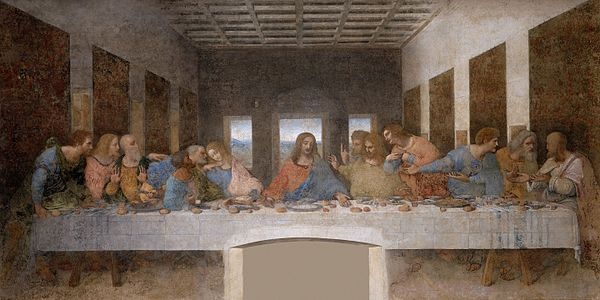
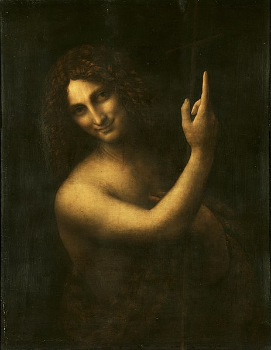
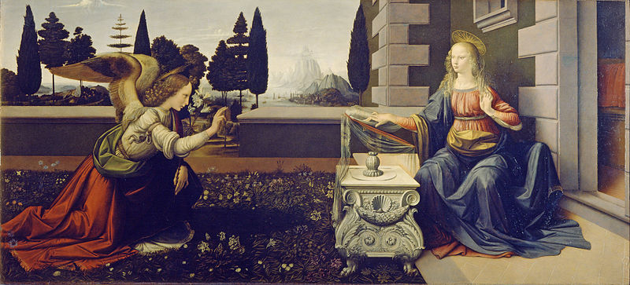

Leonardo da Vinci fue un polímata florentino del Renacimiento italiano. Fue a la vez pintor, anatomista, arquitecto, paleontólogo, artista, botánico, científico, escritor, escultor, filósofo, ingeniero, inventor, músico, poeta y urbanista.
La Gioconda

El Retrato de Lisa Gherardini, esposa de Francesco del Giocondo, más conocido como La Gioconda o La Mona Lisa, es una obra pictórica del polímata renacentista italiano Leonardo da Vinci. Fue adquirida por el rey Francisco I de Francia a comienzos del siglo XVI y desde entonces es propiedad del Estado Francés.
Bautismo de Cristo

Bautismo de Cristo es un cuadro del taller del pintor renacentista italiano Verrocchio, algunas de cuyas partes se atribuyen a Leonardo da Vinci. Está realizado al óleo y temple sobre tabla. Mide 177 cm de alto y 171 cm de ancho.
Última Cena
La última cena es una pintura mural original de Leonardo da Vinci ejecutada entre 1495 y 1498. Se encuentra en la pared sobre la que se pintó originariamente, en el refectorio del convento dominico de Santa Maria delle Grazie, en Milán, declarado Patrimonio de la Humanidad por la Unesco en 1980
San Juan Bautista
También conocido como "El Vato" Fue una de las últimas pinturas del autor y, sin duda, una de las más debatidas. Hay mucha polémica sobre el significado de la mano del santo apuntando hacia arriba, y su sonrisa enigmática ha provocado discusiones semejantes a las de la Mona Lisa.
Representa a Juan el Bautista en la soledad del desierto. Está representado de medio cuerpo, una variación sobre el tema de la figura construida clásica y monumentalmente en el espacio en directa sugestión de los modelos de la estatuaria antigua.
Anunciación
La Anunciación es uno de los cuadros más célebres del pintor renacentista italiano Leonardo da Vinci. Está pintado al óleo sobre tabla que mide 98 cm. de alto y 217 cm. de ancho y data del periodo 1472-1475. Se conserva en la Galería de los Uffizi de Florencia.